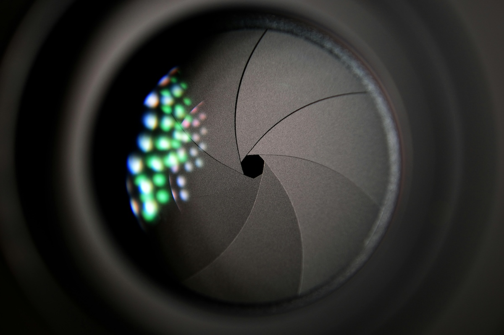

Fotoğrafta Diyaframın Sırrı: Işığı ve Alan Derinliğini Nasıl Kontrol Edersiniz?
Fotoğrafçılıkta başarılı olmanın yolu, teknik detayları öğrenmekten geçer. Bu detayların başında ise diyafram gelir. Diyafram, sadece ışık miktarını kontrol etmekle kalmaz, aynı zamanda fotoğrafınızın netlik ve derinlik gibi unsurlarını da doğrudan etkiler. Bu yazıda, diyaframın nasıl çalıştığını, fotoğraflarınıza nasıl etki ettiğini ve alan derinliği ile ışık dengesini nasıl optimize edebileceğinizi öğreneceksiniz.
Diyafram Nedir?
Diyafram, objektifin içinde yer alan ve açılıp kapanarak objektiften geçen ışık miktarını ayarlayan mekanizmadır. Diyaframın boyutu, f-stop adı verilen değerlerle ifade edilir. F-stop değeri küçüldükçe (örneğin f/1.4), diyafram açıklığı büyür ve daha fazla ışık içeri girer. Tam tersi durumda, f-stop değeri büyüdükçe (örneğin f/8), diyafram daralır ve daha az ışık içeri girer.

Diyaframın Fotoğrafa Etkisi
Diyafram sadece ışık kontrolü sağlamaz; aynı zamanda fotoğraftaki alan derinliğini de etkiler. Geniş diyafram (küçük f-stop) kullanıldığında, sahnede odaklanılan nokta dışında kalan alanlar bulanıklaşır. Dar diyafram (büyük f-stop) ise daha geniş bir alanın net olmasını sağlar. Bu nedenle diyafram seçimi, fotoğrafın genel kompozisyonunu belirleyen en kritik faktörlerden biridir.
Alan Derinliği Nedir?
Alan derinliği, fotoğrafın odakta olan ve net görünen bölgesini ifade eder. Sığ alan derinliği, fotoğrafın sadece küçük bir kısmının net olduğu ve geri kalanının bulanıklaştığı durumları tanımlar. Bu, genellikle portre çekimlerinde tercih edilen bir tekniktir. Derin alan derinliği ise, fotoğrafın hem ön hem de arka planının net olduğu durumlar için kullanılır ve manzara fotoğraflarında sıkça tercih edilir.
Geniş Diyafram ve Sığ Alan Derinliği
Geniş diyafram (f/1.4, f/2.8 gibi) kullanıldığında, fotoğrafın odak noktası net kalırken, geri kalan kısımlar flu görünür. Bu teknik özellikle portre fotoğrafçılığında kullanılarak, öznenin arka plandan ayrılması sağlanır. Aynı zamanda bu bulanıklık efekti, fotoğrafın estetik değerini artıran bokeh efekti olarak bilinir.

Dar Diyafram ve Derin Alan Derinliği
Dar diyafram (f/11, f/16 gibi) kullanmak, sahnedeki her şeyin net olmasını sağlar. Bu da özellikle geniş manzara çekimlerinde tercih edilir. Geniş bir doğa sahnesini fotoğraflarken, ön plandaki nesnelerden arka plandaki dağlara kadar her şeyin net görünmesini istiyorsanız, dar diyafram kullanmak en iyi çözümdür.

Diyafram ve Işık Kontrolü
Diyafram, fotoğrafa giren ışık miktarını doğrudan kontrol eder. Geniş diyafram daha fazla ışık alarak parlak bir görüntü sağlar, dar diyafram ise ışığı sınırlayarak daha karanlık bir görüntü sunar. Bu noktada, fotoğrafın pozlama dengesini ayarlamak için diyafram ile birlikte enstantane hızı ve ISO değerleri de dikkate alınmalıdır. Bu üçlü, pozlama üçgeni olarak bilinen temel ışık kontrolünü oluşturur.
Alan Derinliğini Nasıl Kontrol Edebilirsiniz?
Diyafram dışında, alan derinliğini etkileyen iki faktör daha vardır: odak mesafesi ve odak uzaklığı. Konuya ne kadar yakınsanız, alan derinliği o kadar sığ olacaktır. Aynı şekilde, telefoto lenslerle çekim yaparken de alan derinliği daha sığ olabilir. Geniş açılı lensler ise genellikle daha geniş bir alanı net şekilde çekebilir, bu da derin alan derinliği sağlar.
Diyafram Ayarlarını Hangi Çekimlerde Kullanmalısınız?
Diyafram seçimi, çekmek istediğiniz sahneye bağlı olarak değişir. Portre çekimlerinde f/1.8 gibi geniş diyafram değerleri tercih edilirken, manzara fotoğraflarında f/11 veya f/16 gibi dar diyafram ayarları kullanılır. Düşük ışık koşullarında da geniş diyaframlar, daha fazla ışık alarak daha iyi sonuçlar elde etmenize yardımcı olabilir.
Diyaframı Öğrenmenin Yolları
Diyaframın etkisini anlamanın en iyi yolu, farklı f-stop değerlerinde çekim yaparak sonuçları karşılaştırmaktır. Aynı sahneyi farklı diyafram değerleriyle çekmek, ışık ve alan derinliği üzerindeki kontrolünüzü geliştirmenize yardımcı olur. Bu deneyler, diyaframın fotoğrafçılığınızdaki gücünü ve etkisini görsel olarak anlamanıza olanak tanır.
Diyafram, fotoğrafçılığın hem teknik hem de sanatsal yönünü etkileyen kritik bir unsurdur. Işık kontrolünden alan derinliğine kadar birçok faktörü yönetmenizi sağlar. Diyafram ayarlarını doğru kullanarak fotoğraflarınıza profesyonel bir dokunuş katabilir, hikayenizi daha güçlü bir şekilde anlatabilirsiniz.